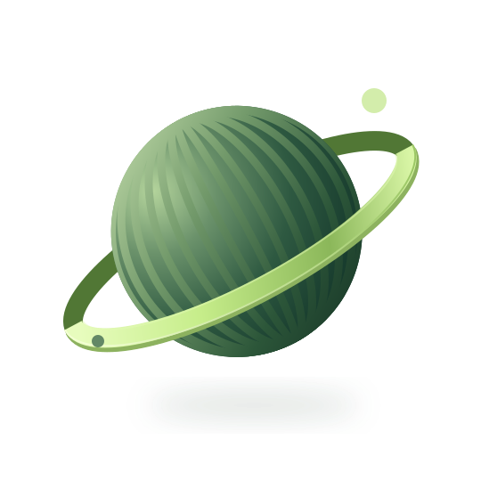

Start with the problem.
Understand the data, the constraints, and what a useful outcome actually looks like.
I’m Timilehin, an AI & Machine Learning Engineer focused on transforming data and emerging technologies into practical, scalable solutions across computer vision, LLMs, NLP, and intelligent automation.

from curiosity import ideas
impact = build(ideas)▍THE TOOLS BEHIND THE INTELLIGENCE
From model training to deployment and automation, I connect the pieces that make intelligent systems work.
FROM FIRST QUESTION TO FINAL DETAIL
Understand the data, the constraints, and what a useful outcome actually looks like.
Explore approaches, train and evaluate models, and let the evidence guide the next step.
Connect the model to an API, a pipeline, or a workflow that people can put to work.
RESEARCH MEETS REAL-WORLD PROBLEMS
Computer vision, language AI, and the workflows that connect them to the world. Select a project to take a closer look.
ENGINEERING. RESEARCH. REAL-WORLD IMPACT.
Building intelligent systems. Turning data into practical solutions across language, vision, and energy.
LEARNING NEVER STOPS
Curiosity, independent study, and learning by building.
HAVE SOMETHING IN MIND?